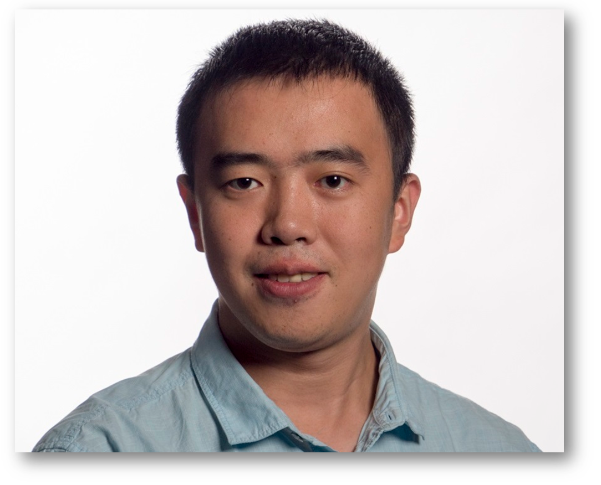

|  | Research Scientist Contact
|
I am currently a research scientist at Google Brain. I am working on deep learning and its applications in text-to-speech and speech recognition.
I completed my PhD at MIT working with Prof. Vivienne Sze on energy efficient autonomous navigation algorithms and systems.
I complete my master thesis under the supervision of Prof. Edward H. Adelson on computational photography.
Before I joined MIT, I worked at Microsoft Research Asia with Prof. Yi Ma on 3D reconstruction and rank minimization.
I finished my undergraduate study at Tsinghua Xuetang Special Pilot CS Class (Yao Class) supervised by Turing Award Winner Prof. Andrew Chi-Chih Yao in Institute of Interdisciplinary Information Sciences, Tsinghua University.
My research interest spans the area of sparsity, low-rank matrix recovery, symmetry/regularity of textures, 3D computer vision, computational photography, object detection, video compression, localization, mapping.
You can find my resume here
2014 - 2019, PhD in Electrical Engineering and Computer Science
Massachusetts Institute of Technology
Advisor Prof. Vivienne Sze
2012 - 2014, Master of Science in Computer Science
Massachusetts Institute of Technology
Advisor Prof. Edward H. Adelson
2007 - 2011, Bachelor of Engineering in Computer Science
Tsinghua Xuetang Special Pilot CS Class (Yao Class), Tsinghua University
Advisor Prof. Andrew Chi-Chih Yao
2018.2 - present, Research Scientist
Google Brain, Mountain View, California
2016.6 - 2016.7, Visiting Researcher
Shanghai Tech University, Shanghai, China
2015.12 - 2016.1, Visiting Researcher
National Institute of Informatics, Tokyo, Japan
2014.5 - 2014.8, Research intern
National Institute of Informatics, Tokyo, Japan
2013.5 - 2013.8, Software Engineer Intern
Google Mountain View, California
2011.7 - 2012.6, Assistant Researcher
Visual Computing group, Microsoft Research Asia
2009.10 - 2011.6, Research Intern
Visual Computing Group, Microsoft Research Asia
FSMI: Fast computation of Shannon Mutual Information for information theoretic mapping
Zhengdong Zhang, Trevor Henderson, Sertac Karaman, and Vivienne Sze
submitted to International Journal of Robotics Research (IJRR), 2019
Navion: A 2-mW Fully Integrated Real-Time Visual-Inertial Odometry Accelerator for Autonomous Navigation of Nano Drones
Amr Suleiman, Zhengdong Zhang, Luca Carlone, Sertac Karamand, and Vivienne Sze
IEEE Journal of Solid-State Circuits (JSSC), 2019
A 58.6 mW 30 Frames/s Real-Time Programmable Multiobject Detection Accelerator With Deformable Parts Models on Full HD 1920x1080 Videos
Amr Suleiman, Zhengdong Zhang, Vivienne Sze
IEEE Journal of Solid-State Circuits (JSSC), 2017
Texture Repairing by Unified Low Rank Optimization
Xiao Liang, Xiang Ren, Zhengdong Zhang, Yi Ma
Journal of Computer Science and Technology 31 (3), 525-546, 2016
Robust Subspace Discovery via Relaxed Rank Minimization
Xinggang Wang, Zhengdong Zhang, Yi Ma, Xiang Bai, Wenyu Liu, and Zhuowen Tu
Neural Computation 2014, conference version presented at ACCV 2012 [pdf]
TILT: Transform Invariant Low-rank Textures
Zhengdong Zhang, Arvind Ganesh, Xiao Liang and Yi Ma
International Journal of Computer Vision (IJCV) 2011, conference version presented at ACCV 2010 [pdf, project website]
High-Through Computation of Shannon Mutual Information on Chip
Peter Li*, Zhengdong Zhang*, Sertac Karaman, and Vivienne Sze
Robotics: Science and Systems (RSS) 2019
FSMI: Fast computation of Shannon Mutual Information for information-theoretic mapping
Zhengdong Zhang, Trevor Henderson, Vivienne Sze, and Sertac Karaman
IEEE Conference on Robotics and Automation (ICRA) 2019
Navion: A 2-mW Fully Integrated Energy-Efficient Visual-Inertial Odometry Accelerator for Autonomous Navigation of Nano Drones
Amr Suleiman, Zhengdong Zhang, Luca Carlone, Sertac Karamand, and Vivienne Sze
2016 Symposia on VLSI Technology and Circuits (VLSI) 2018
Visual-Inertial Odometry on Chip: An Algorithm-and-Hardware Co-design Approach
Zhengdong Zhang*, Amr Suleiman*, Luca Carlone, Vivienne Sze, Sertac Karaman
Robotics: Science and Systems (RSS) 2017
Hardware for Machine Learning: Challenges and Opportunities
Vivienne Sze, Yu-Hsin Chen, Joel Emer, Amr Suleiman, Zhengdong Zhang
arXiv preprint arXiv: 1612.07625
FAST: Free Adaptive Super-Resolution via Transfer for Compressed Videos
Zhengdong Zhang, Vivienne Sze
CVPR Workshop 2017
A 58.6mW Real-Time Programmable Object Detector with Multi-Scale Multi-Object Support Using Deformable
Parts Model on 1920x1080 Video at 30fps
Amr Suleiman, Zhengdong Zhang, and Vivienne Sze
2016 Symposia on VLSI Technology and Circuits (VLSI) 2016
Rotate Intra Block Copy for Still Image Coding
Zhengdong Zhang, and Vivienne Sze
International Conference on Image Processing (ICIP) 2015
Sparkle Vision: Seeing the World through Random Specular Microfacets
Zhengdong Zhang, Phillip Isola, and Edward H. Adelson
Workshop on Computational Camera and Display, IEEE Conference on Computer Vision and Pattern Recognition (CVPR-CCD) 2015
Repairing Sparse Low-rank Textures
Xiao Liang, Xiang Ren, Zhengdong Zhang, and Yi Ma
European Conference on Computer Vision (ECCV) 2012[pdf]
Rectifying Low-rank Textures on Generalized Cylindrical Surfaces
Zhengdong Zhang, Xiao Liang, and Yi Ma
International Conference on Computer Vision (ICCV) 2011[pdf]
Camera Calibration with Lens Distortion from Low-rank Textures
Zhengdong Zhang, Yasuyuki Matsushita, and Yi Ma
IEEE Conference on Computer Vision and Pattern Recognition (CVPR) 2011[pdf]
Decomposing Background Topics from Keywords by Principal Component Pursuit
Kerui Min, Zhengdong Zhang, John Wright, and Yi Ma
ACM International Conference on Information and Knowledge Management (CIKM) 2013[pdf]
Robust Recovery of Transform Invariant Low-rank Textures
Zhengdong Zhang, Xiao Liang, Arvind Ganesh, and Yi Ma
U.S. Patent Application Serial No. 12/955,737, filed on November 29, 2010
Robust Camera Calibration and Camera Undistortion
Zhengdong Zhang, Yasuyuki Matsushita, and Yi Ma
MS NO. 333143.01
Rectification of Characters and Text as Transform Invariant Low-rank Textures
Xin Zhang, Zhengdong Zhang, Xiao Liang, Zhouchen Lin, and Yi Ma
MS No. 33145.01
Leading Edge Detection, Rotation, and Occlusion of Space between Neighboring Image Pairs of a Set of Images
Zhengdong Zhang, and Yuli Gao
U.S. Patent Application No. 14/173,785, Google Ref. No. GP-19754-0-US
6.438 Algorithm for Inference
6.869 Advances in Computer Vision
6.875 Cryptography and Cryptanalysis
6.820 Foundation of Programming Analysis
6.344 Digital Image Processing (Teaching Assistant)
6.374 Analysis and Design: Digital Circuits
15.401 Finance Theory I
6.870 Smartphone Vision
15.439 Investment Management
David S. Y. Wong Fellowship at MIT, 2012
Kaifeng Scholarship at Tsinghua University, 2009
Freshman Scholarship at Tsinghua University, 2008
Ranked 2/280758 in National College Entrance Examination, Sichuan Province, China, 2007
First Prize Award in National Mathematics Contest, 2006